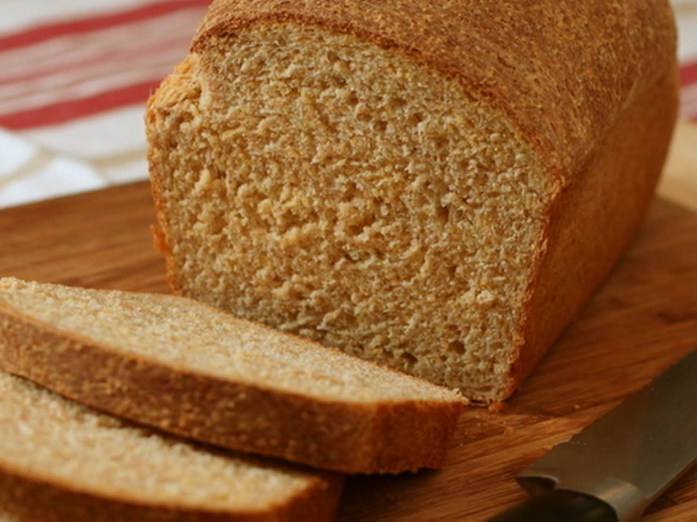

Graham is a dense bread made with graham flour, milk, molasses, salt, and yeast. It is high in fiber and has a delicious flavor and texture. Molasses helps to rise the dough, but sugar can be used instead. Both Graham flour and Graham bread were created by Sylvester Graham in the 19th century.
Meal prep time : 2 hours 30 minutes
Servings : 2